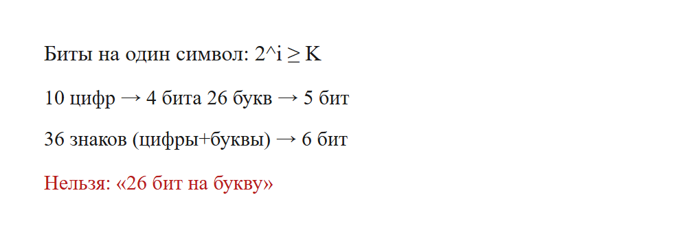
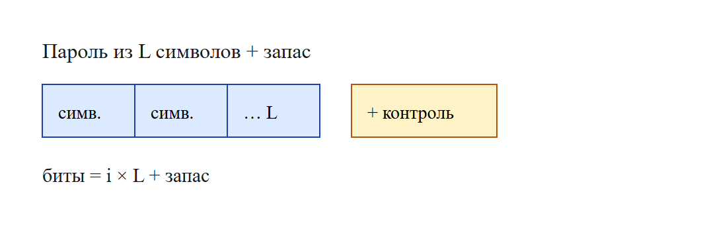
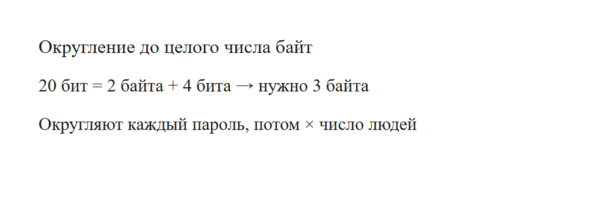
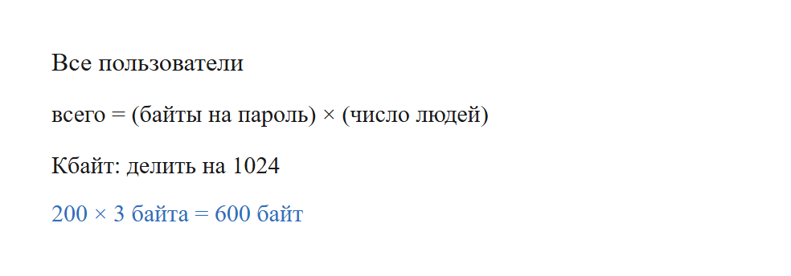

Обычно речь про пароли или коды пользователей. Нужно понять: сколько памяти займёт один пароль и сколько займут все вместе.
Алфавит известен: например, 10 цифр, или 26 букв, или цифры плюс буквы. Каждый символ кодируют одинаковым числом бит — минимальным, которого хватает на весь алфавит.
Пусть в алфавите K разных символов. Ищем минимальное целое i, такое что:
2i ≥ K
Примеры:
| Алфавит | K | Проверка | Биты на символ |
|---|---|---|---|
| цифры 0–9 | 10 | 23=8 мало, 24=16 хватает | 4 |
| латиница A–Z | 26 | 24=16 мало, 25=32 хватает | 5 |
| цифры + 26 букв | 36 | 25=32 мало, 26=64 хватает | 6 |
Нельзя писать «26 бит на букву». Биты считают степенью двойки, не «по одному биту на каждую букву алфавита».

Если пароль из L символов:
биты = i × L
Иногда в условии добавляют контрольную сумму или «ещё N бит для надёжности». Их просто прибавляют.

В памяти удобно хранить целое число байт. Если бит не делится на 8, округляют вверх.
Пример: 20 бит. 20 / 8 = 2 байта и ещё 4 бита. Значит нужно 3 байта.
Формула в уме: делим на 8, если остаток не ноль — добавляем 1 байт.
Внимание: округляют каждый пароль отдельно, а потом умножают на число людей. Нельзя сначала сложить все биты всех людей и округлить один раз — так делают, только если в условии прямо сказано округлять уже общую сумму.

всего = (байты на один пароль) × (число людей)
Если просят килобайты — делят на 1024. Мегабайты — ещё раз на 1024.

Алфавит — 26 букв, пароль из 4 символов. Сколько бит на пароль?
Тот же пароль хранят «целым числом байт». Сколько байт на один пароль?
20 бит не делятся на 8. Нужно 24 бита = 3 байта.
200 пользователей, по 3 байта. Всего байт?
200 × 3 = 600.
Алфавит: 10 цифр и 26 букв (36 символов). Пароль из 6 знаков. Плюс 8 бит контрольной суммы. Целое число байт на пароль?
4096 паролей, каждый ровно 20 бит, без округления до байт. Сколько Кбайт на всех?
Порядок всегда один. Сначала биты на символ: 2 в степени i не меньше размера алфавита. Потом умножение на длину пароля. Потом запасные биты, если они есть. Если хранят целым числом байт — делят на 8 с округлением вверх, и только потом умножают на число людей.
Округлять общую кучу бит всех людей можно лишь тогда, когда в условии так прямо сказано.
Каждый фрагмент запускается отдельно. В конце он печатает ответ. Комментарии на русском говорят, какая строка за что отвечает.
alphabet = 26 # МЕНЯТЬ: сколько разных символов
length = 4 # МЕНЯТЬ: длина пароля
bits = 0
while 2 ** bits < alphabet:
bits += 1
print(bits * length)Что менять, если условие другое.
Программа печатает 20.
password_bits = 20 # МЕНЯТЬ: биты одного пароля
def bytes_up(bits):
# Целое число байт: округление вверх.
return (bits + 7) // 8
print(bytes_up(password_bits))Что менять, если условие другое.
Программа печатает 3.
people = 200 # МЕНЯТЬ
per_password = 3 # МЕНЯТЬ: байт на один пароль, уже после округления
print(people * per_password)Что менять, если условие другое.
Программа печатает 600.
alphabet = 36 # МЕНЯТЬ: 10 цифр + 26 букв
length = 6
extra = 8 # МЕНЯТЬ: контрольная сумма, биты
bits_symbol = 0
while 2 ** bits_symbol < alphabet:
bits_symbol += 1
total_bits = bits_symbol * length + extra
print((total_bits + 7) // 8)Что менять, если условие другое.
Программа печатает 6.
people = 4096 # МЕНЯТЬ
bits_each = 20 # МЕНЯТЬ: без округления каждого пароля
all_bits = people * bits_each
all_bytes = all_bits // 8
print(all_bytes // 1024)Что менять, если условие другое.
Программа печатает 10.